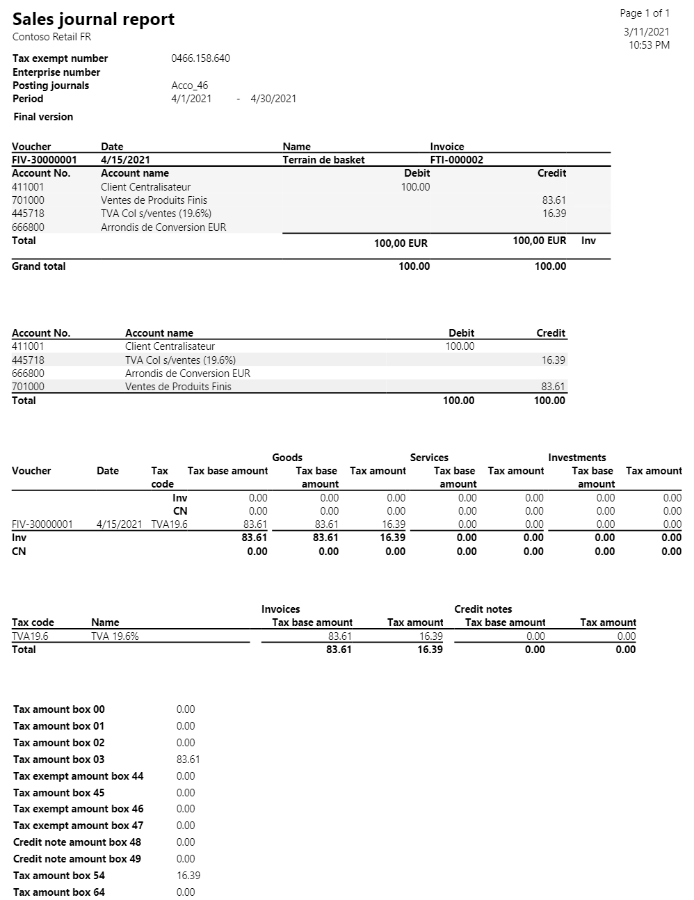
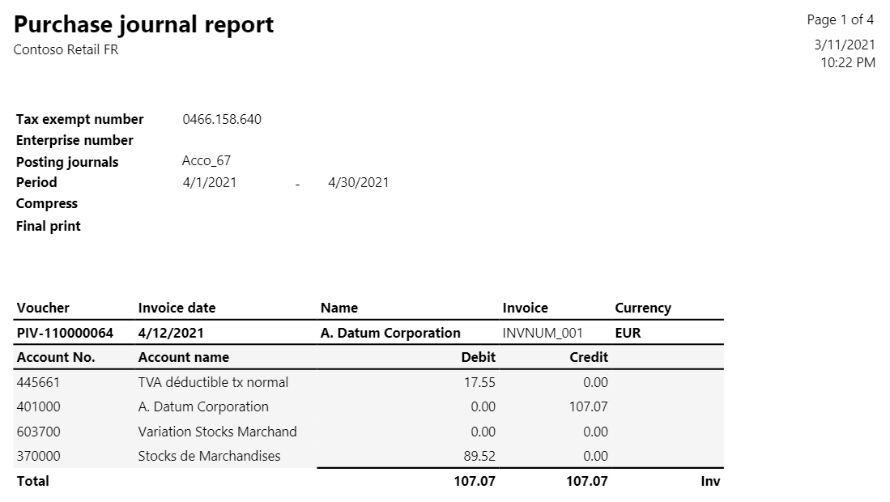
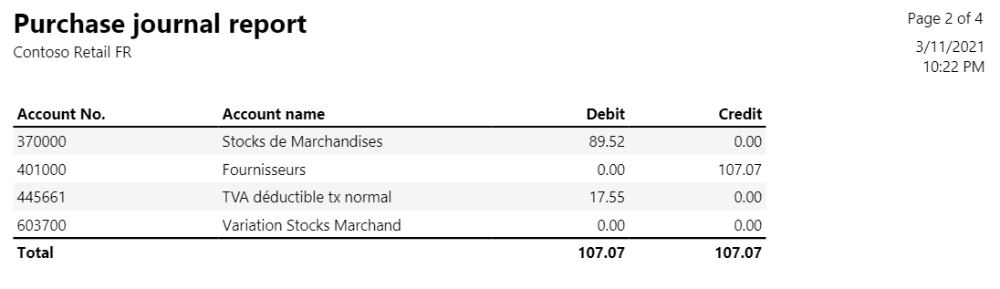
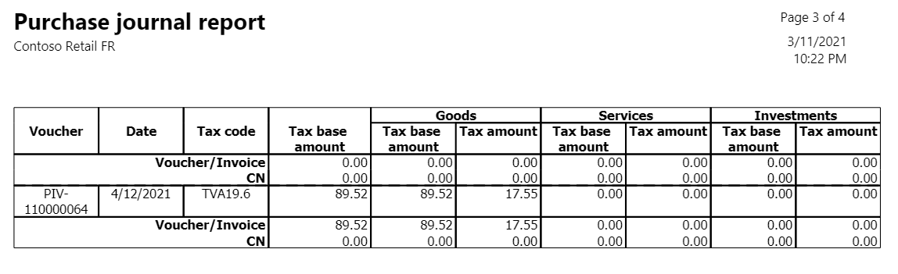
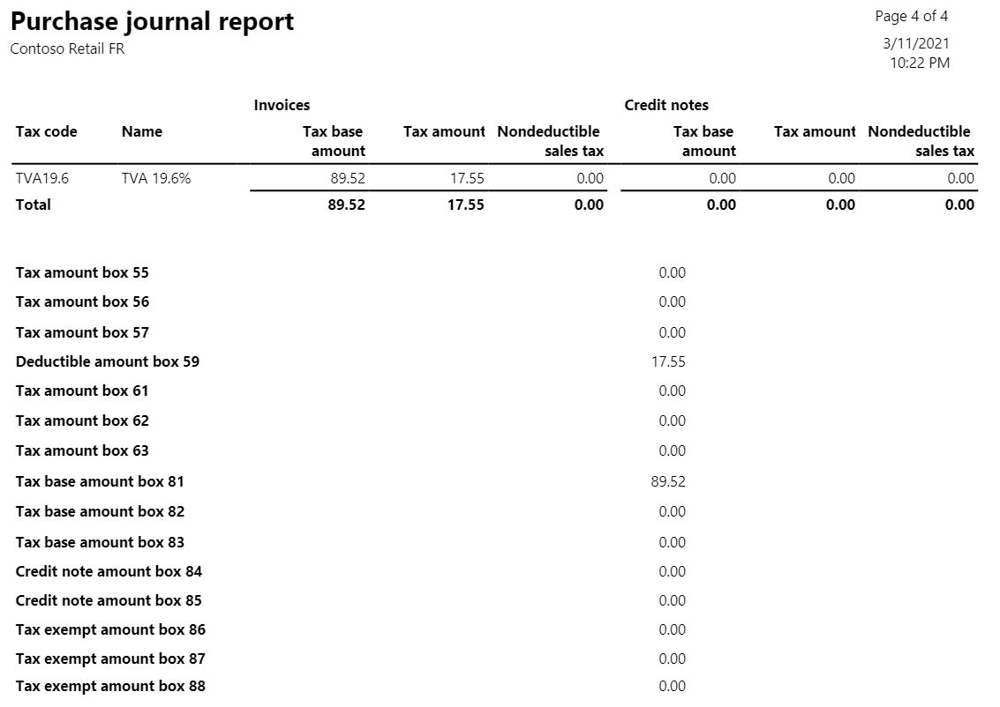
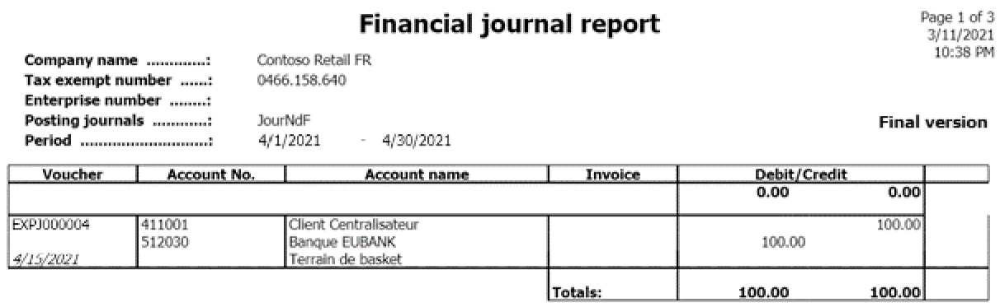
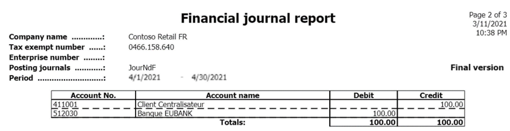
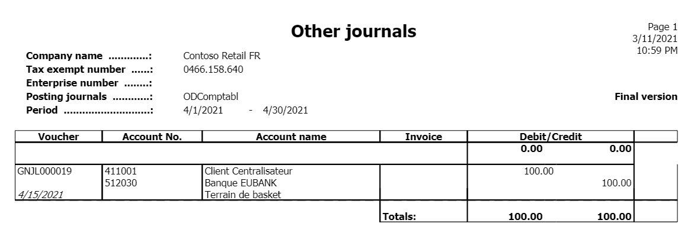
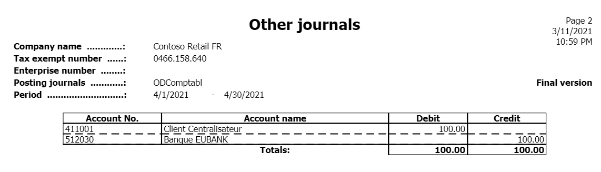
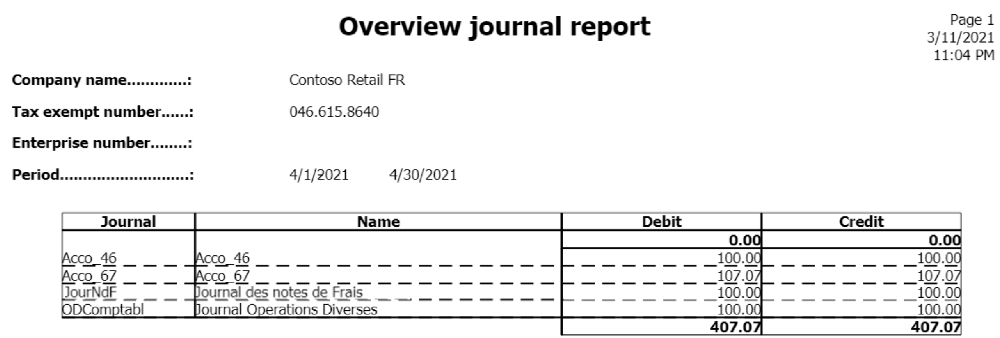

Journal reports (Posting journals)
[!include[banner](../includes/banner.md)]Periodically, Belgian companies must print a report for each journal. The report provides a chronological list of all the postings to the general ledger accounts for each journal. These reports prove the integrity of the accountancy and are used during financial audits to reconcile VAT settlement with the postings on the corresponding general ledger accounts.
There are five types of reports you can generate.
- Purchase journal: Provides an overview of all purchases.
- Sales journal: Provides an overview of all sales.
- Financial journal: Provides an overview of all financial entries.
- Other journal: Provides an overview of all diverse operations.
- Overview journal: Provides an overview of all the printed journals.
These reports are available only to legal entities whose primary address is in Belgium.
Each report consists of several sections and summaries including:
- A detailed overview of the postings to the general ledger accounts.
- A summary of the postings to the general ledger accounts.
- A detailed overview of tax posting.
- A summary of tax posting.
- A summary of the tax amount boxes used in the selected journal.
You can set the following parameters when you generate a report.
| Field | Description |
|---|---|
| Journal | Select the name of the sales journal to use to post transactions to the general ledger account. |
| From date | Select or enter the start date of the reporting period. |
| To date | Select or enter the end date of the reporting period. |
| Final print | Set to Yes to print the final version of the report. When you select Final print, the following occurs:
|
| Compress | Select this option to group amounts on the same ledger account in the same voucher into one line.
|
Setup
The reports are linked to the posting journals in the general ledger by number sequences. For each posting journal, select the journal type, either purchase, sales, other, or financial, or you can leave the field empty.
Go to General ledger > Journal setup > Posting journals.
On the Action Pane select Create to generate posting journals automatically. The posting journals are created to correspond with the number sequence codes. To create a posting journal manually, select New.
Select a posting journal and in the Belgian journal reports section, in the Journal type field, select the journal type.
Go to Tax > Indirect taxes > Sales tax > Item sales tax groups.
Select an item sales tax group, and in the Reporting type field, select where the item sales tax line amount will be included on the European Union (EU) sales list.
- Blank: The sales tax line amount is included in the Not assigned column.
- Item: The sales tax line amount is included in the Items column.
- Service: The sales tax line amount is included in the Services column.
- Investment: The sales tax line amount is included in the Investment column.
Sales journals report
The Sales journals report displays and prints a summary of sales transactions, such as sales invoices and credit memos that are posted to the general ledger. This report summarizes the following:
- The payment transactions per voucher and general ledger account.
- The overall debits and credits per general ledger account.
- The tax details per tax code and voucher number, including the tax base amount and tax amount distribution against goods, services, and investments.
- A list of the tax postings sorted by their corresponding tax reporting codes.
This report is typically used by collections agents, collections managers, chief financial officers, accounts receivable clerks, accounts receivable managers, and financial controllers to review the status of the invoices and the cash process.
Go to General ledger > Inquiries and reports > Journal reports > Sales journals and set the parameters to generate the report.
Purchase journals report
The Purchase journals report displays and prints a summary of the transactions in a purchase journal. This report is typically used by accounts payable coordinators and accountants.
Go to General ledger > Inquiries and reports > Journal reports > Purchase journals and set the parameters to generate the report.
Financial journal report
The Financial journals report displays and prints a summary of financial transactions, such as customer payments and vendor payments, that are posted to the general ledger account. This report summarizes the following:
- The payment transactions per voucher and general ledger account.
- The overall debits and credits per general ledger account.
- The tax details per tax code and voucher number, including the tax base amount and tax amount distribution against goods, services, and investments.
- A list of the tax postings sorted by their corresponding tax reporting codes.
This report is typically used by chief executive officers, chief financial officers, compliance managers, accounting managers, accounting supervisors, and financial controllers to review the status of the general ledger process.
Go to General ledger > Inquiries and reports > Journal reports > Financial journals and set the parameters to generate the report.
Other journal report
The Other journal report displays and prints a summary of the posted transactions that are not categorized under sales, purchases, or financials. This report is typically used by accountants, accounting managers, clerks, accounting supervisors, and compliance managers to inquire into journal transactions.
Go to General ledger > Inquiries and reports > Journal reports > Other journals and set the parameters to generate the report.
Overview journal report
The Overview journal report displays and prints a summary of the posted transactions that aren't categorized under sales, purchases, or financials.
This report is typically used by accountants, accounting managers, clerks, accounting supervisors, and compliance managers to inquire into journal transactions.
Example
The following example shows how you can set up posting journals and generate and print the posting journals reports. This example uses the FRRT legal entity.
Go to Organization administration > Organization> Legal entities, and select the FRRT legal entity.
On the Address FastTab, select Edit. In the Country/region field, select BEL (Belgium).
Go to General ledger > Journal Setup > Posting journals.
On the Action Pane, select Create.
Set the Journal type for the journals according to the following table.
Journal Journal type Acco_46 Sales Acco_67 Purchase JourNdF Financial ODComptabl Other Go to Tax > Indirect taxes > Sales tax > Item sales tax groups.
Select the NORMAL item sales tax group and in the Reporting type field, select Item.
Go to Tax > Indirect taxes > Sales tax > Sales tax authorities.
Select the TAXFRA and on the General FastTab, in the Report layout field, select Belgium report layout.
Go to Tax > Setup > Sales tax > Sales tax reporting codes and create the following reporting codes.
Reporting layout Reporting code Report text Belgium reporting layout 03 Taxable supplies and services at a sales tax rate of 21 percent.
The delivery of a product or service transactions at a sales tax rate of 21 percent.Belgium reporting layout 54 VAT that is payable on the turnover that is included in codes 01, 02, and 03. Belgium reporting layout 81 Amount of all purchases of goods, raw materials, and consumables, and related acquisition costs, excluding VAT deductible. Belgium reporting layout 59 Amount of deductible VAT. For more information, see Set up sales tax reporting codes.
Go to Tax > Indirect taxes > Sales tax > Sales tax codes.
Select TVA19.6, and on the Report setup FastTab, in the Sale section, select the following:
- In the Taxable sales field, select 03.
- In the Sales tax payable field, select 54.
In the Purchase section, select the following:
- In the Tax purchases field, select 81.
- In the Sales tax receivable, select 59.
Print the Sales journal report
To print the Sales journal report, follow these steps:
Go to Accounts receivable > Invoices > All free text invoices.
Select New and create a new free text invoice with the following information:
- In the Customer account field, select 1001.
- In the Date field, select 4/15/2021.
- On the Invoice lines FastTab, in the Main account field, select 701000.
- In the Sales tax group field, select VE-DOM.
- In the Item sales tax group field, select NORMAL.
- In the Quality field, enter 1.
- In the Unit price field, enter 100.
Post the free text invoice.
Go to General ledger > Inquiries and reports > Journal reports > Sales journals.
In the Criteria section, in the Journal field, select Acco_46.
In the From date field, select 4/1/2021.
In the To date field, select 4/30/2021.
In the Final print field, select Yes. Select OK to review the report.

Print the Purchase journal report
To print the Purchase journal report, follow these steps:
Go to Accounts payable > Purchase orders > All purchase orders.
Select New and create a new purchase order with the following information:
- In the Vendor account field, select 1001.
- In the Item number field, select 0001.
- In the Quality field, enter 3.
- On the Line details FastTab, on the Setup tab, in the Sales tax section, in the Item sales tax group, select NORMAL. In the Sales tax group, select VE-DOM.
Go to Purchase > Actions > Confirm.
Go to Invoice > Generate > Invoice.
In the Invoice identification section, in the Number field, enter INVNUM_001.
In the Invoice dates section, in the Invoice date field, select 4/12/2021.
In the Posting date field, select 4/12/2021.
Post the order.
Go to General ledger > Inquiries and reports > Journal reports > Purchase journals.
In the Criteria section, in the Journal field, select Acco_67.
In the From date field, select 4/1/2021.
In the To date field, select 4/30/2021.
In the Final print field, select Yes. Select OK to view the report.
   
Print the Financial journal report
To print the Financial journal report, follow these steps:
Go to General ledger > Journal entries > General journals.
Create a new journal. In the Name field, select JourNdF.
Select Lines, and enter the following information:
- In the Date field, select 4/15/2021.
- In the Account type field, select Customer.
- In the Account field, select 1001.
- In the Credit field, enter 100.
- In the Offset account type field, select Bank.
- In the Offset account field, select FRRT OPER.
- In the Item sales tax group field, select NORMAL.
- In the Sales tax group field, select VE-DOM.
Post the journal.
Go to General ledger > Inquiries and reports > Journal reports > Financial journals.
In the Criteria section, in the Journal field, select JourNdF.
In the From date field, select 4/1/2021.
In the To date field, select 4/30/2021.
In the Final print field select Yes. Select OK to review the report.


Print the Other journal report
To print the Other journal report, follow these steps:
Go to General ledger > Journal entries > General journals.
Create a new journal. In the Name field, select ODComptabl.
Go to Lines and enter the following information:
- In the Date field, select 4/15/2021.
- In the Account type field, select Customer.
- In the Account field, select 1001.
- In the Debit field, enter 100.
- In the Offset account type field, select Bank.
- In the Offset account field, select FRRT OPER.
- In the Item sales tax group field, select NORMAL.
- In the Sales tax group field, select VE-DOM.
Post the journal.
Go to General ledger > Inquiries and reports > Journal reports > Other journals.
In the Criteria section, in the Journal field, select ODComptabl.
In the From date field, select 5/1/2021.
In the To date field, select 5/31/2021.
In the Final print field, select Yes.
Select OK and review the report result.
 
Print overview journal report
To print the Overview journal report, follow these steps:
- Go to General ledger > Inquiries and reports > Journal reports > Overview journals.
- In the From date field, select 4/1/2021.
- In the To date field, select 5/31/2021.
- Select OK and review the report result.
